Sirayane
- Mission
- Architecture, Architecture d'intérieur
- Lieu
- Route de l'Ourika, Marrakech
- Projet
- Livré, 2022
- Sup. terrain
- > 3 000 m²
- Consistance
- 18 chambres
- Surface construite
- > 1 500 m²
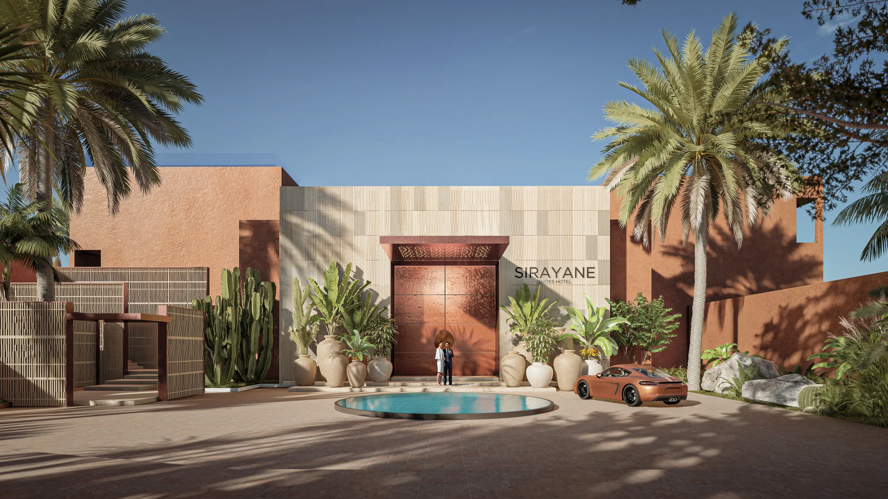
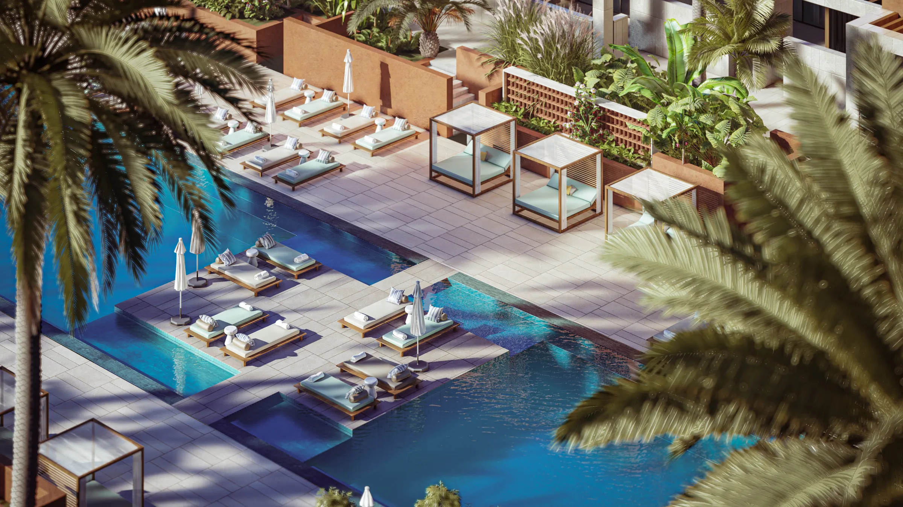
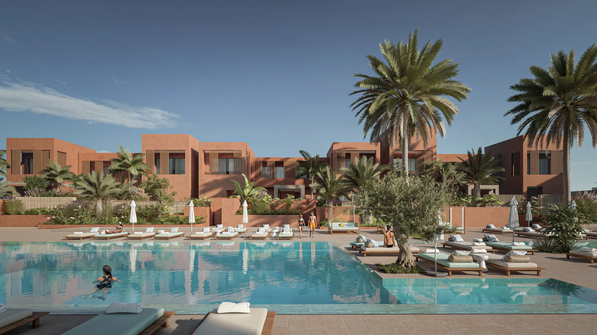
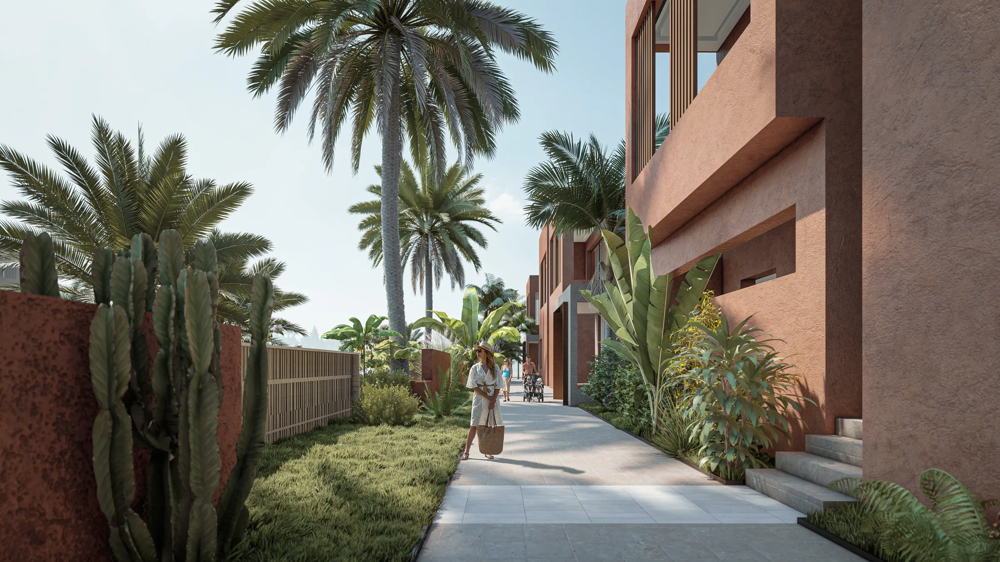
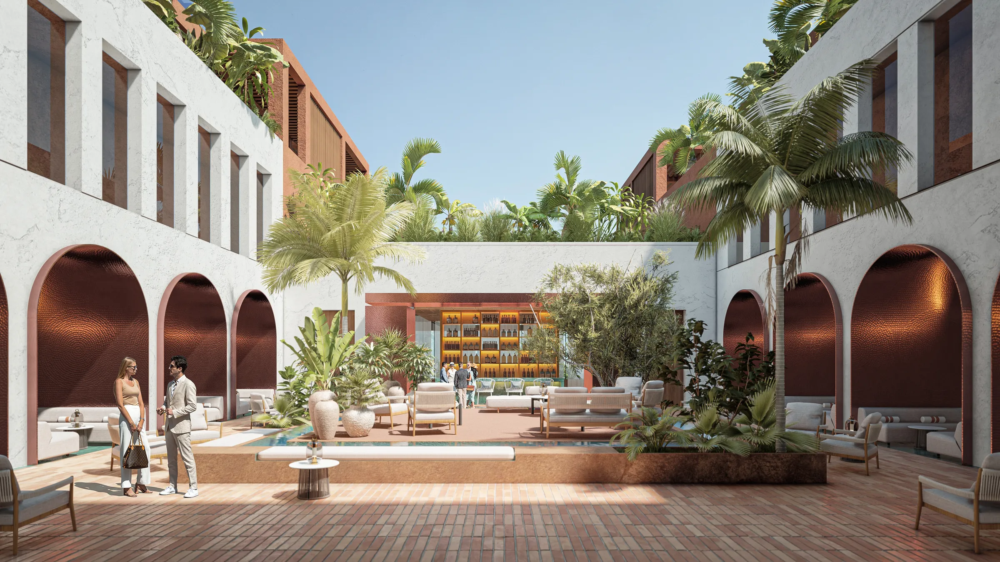
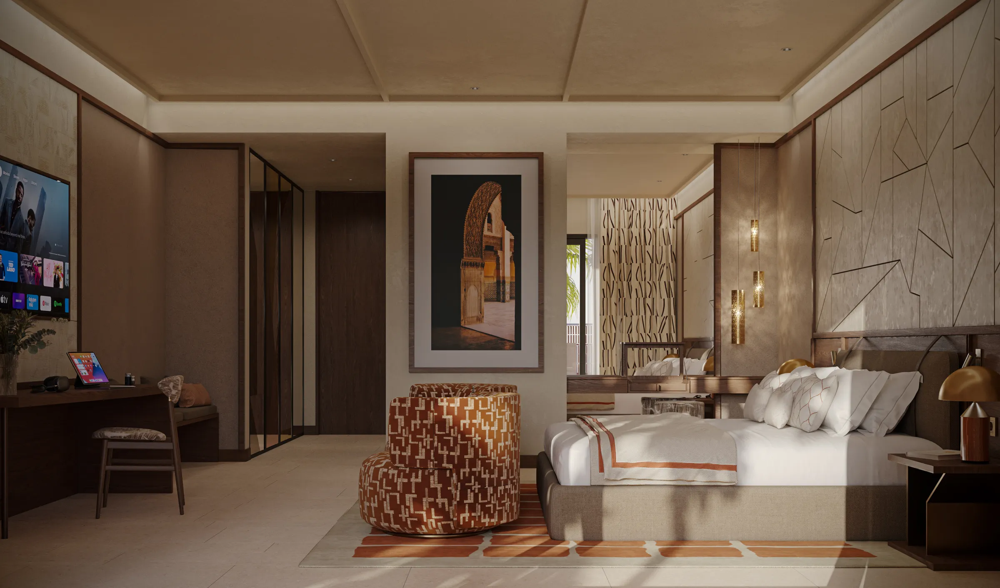
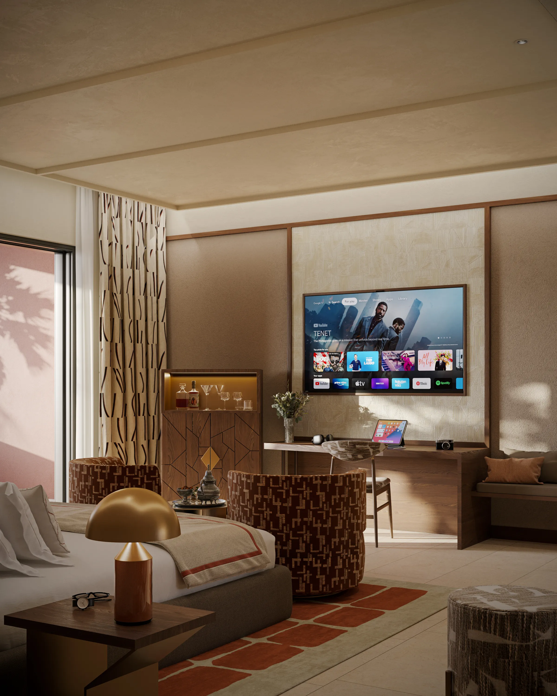
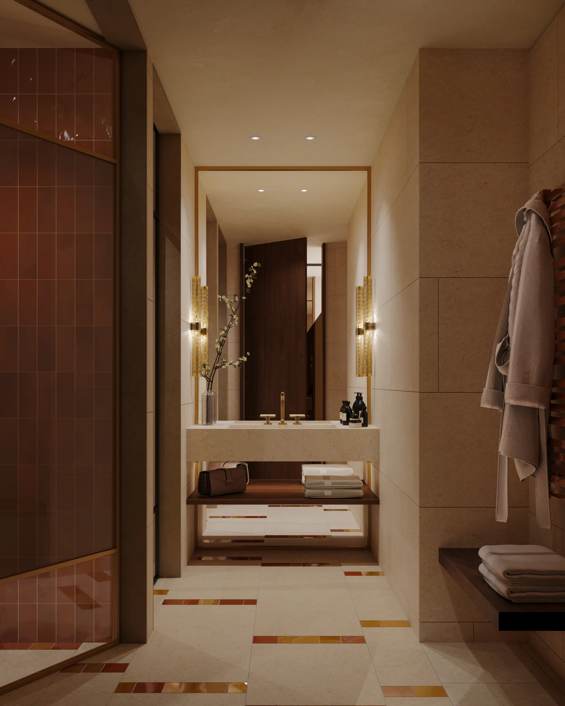
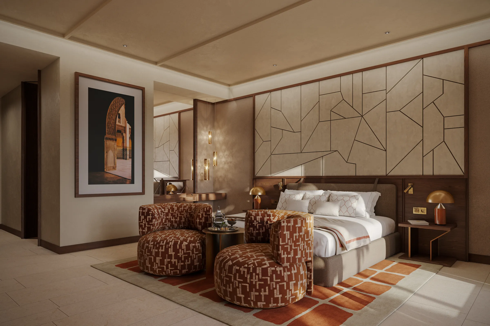
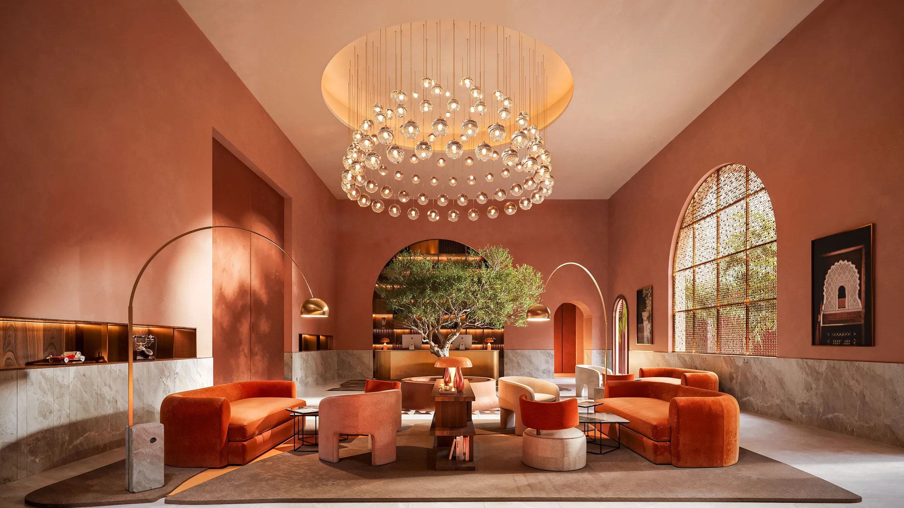
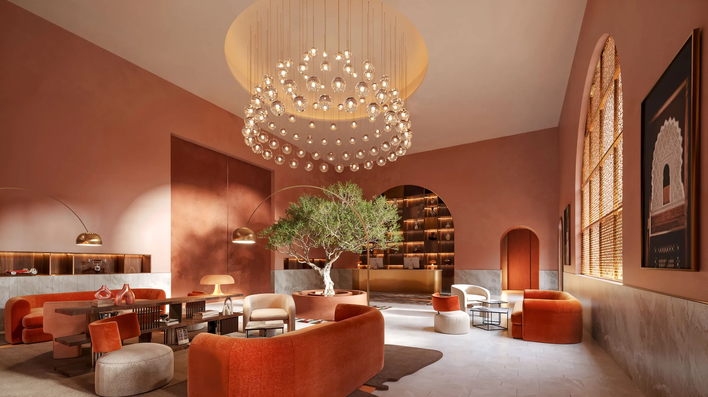
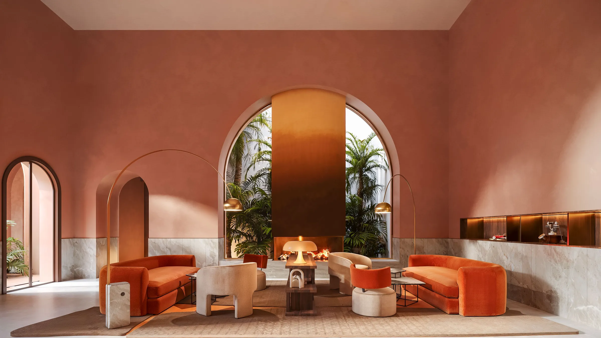